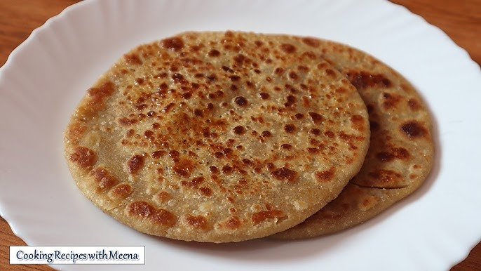

"When I feel low, this brings me back."
Ingredients
Steps & Emotions
- Knead dough - grounding myself
- Roll softly - calming thoughts
- Add sugar - small joy
- Fold layers - holding emotions
- Cook slowly - warmth returns
- Flip gently - patience
- Add ghee - comfort spreads
- Eat warm - peace settles
Time: 15 mins | Difficulty: Easy